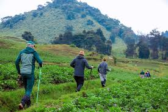
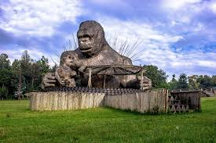
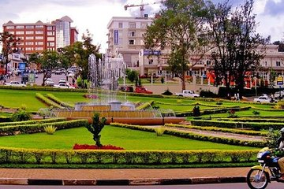

Top Outdoor Activities (Ordered List)
- Hiking on Mount Kigali
- Visiting Nyandungu Eco Park
- Cycling around Kigali City
- Camping near Lake Kivu
- Outdoor photography
Kigali offers many outdoor activities such as hiking, biking, visiting parks, and enjoying nature. This page showcases outdoor experiences, images, lists, and tables as part of my web development assignment.




| Event Name | Location | Month |
|---|---|---|
| Kigali Hiking Day | Mount Kigali | March |
| Lake Kivu Camping Festival | Lake Kivu | April |
| Outdoor Music Festival | Nyandungu Park | May |